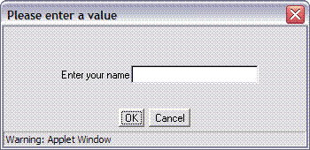
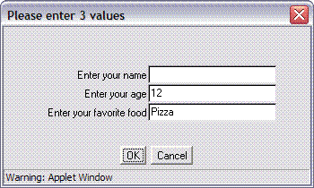
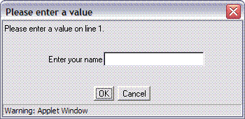
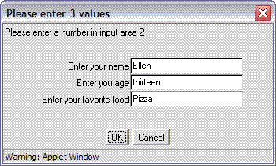
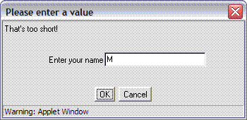
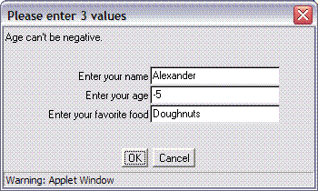

| VVBasic commands | Dialog Box |
|---|---|
| TEXT Name INPUT "Enter your name" Name |  |
| TEXT Name NUMBER Age = 12 TEXT Food = "Pizza" INPUT "Enter your name" Name, "Enter your age" Age, "Enter your favorite food" Food |  |
In the first example above, if the user types Mary into the text area and clicks on the OK button, then the variable Name will have the value "Mary". If the user clicks on the Cancel button, the program stops.
The second example shows that the user can be asked for more than one value. The command INPUT is followed by a "prompt string" in quotation marks, and then a variable name. Multiple prompts and variables can be given, separated by commas. If a variable already has a value (for example, the value of Age is 12), then that value shows up in the text field.
Unless Cancel is selected, the INPUT command also prints an "echo" of the prompts and the values entered in the Output window. For example, with the second example above, the following might be printed:
Enter your name Mike
Enter your age 15
Enter your favorite food Scrambled eggs
The computer makes sure that no input fields are left blank, and that numeric variables such as Age have numbers entered, and not text. In the next examples, the user pressed OK with nothing entered for name (in the first case), and with a non-numeric value for age (in the second case). The computer put a message in the upper left of the dialog box.
| VVBasic commands | Dialog Box |
|---|---|
| TEXT Name INPUT "Enter your name" Name |  |
| TEXT Name NUMBER Age = 12 TEXT Food = "Pizza" INPUT "Enter your name" Name, "Enter your age" Age, "Enter your favorite food" Food |  |
| VVBasic commands | Dialog Box |
|---|---|
| TEXT Name INPUT "Enter your name" Name WHEN Length(Name) < 2 COMPLAIN "That's too short!" |  |
| TEXT Name NUMBER Age = 12 TEXT Food = "Pizza" INPUT "Enter your name" Name, "Enter your age" Age, "Enter your favorite food" Food WHEN Age < 0 COMPLAIN "Age can't be negative." WHEN Age = 0 COMPLAIN "Age can't be zero." WHEN Age > 110 COMPLAIN "You can't be that old." |  |
In the first INPUT example, the user typed in M for Name. The WHEN uses the Length function to determine the length of the text string in the Name variable. The length is 1, which is less than 2, so the WHEN's test is true, and the text following COMPLAIN is displayed at the top of the dialog box.
In the second INPUT example, the user has entered -5 for Age. Since -5 is less than 0, the first WHEN test is true, and the corresponding COMPLAIN text is put in the dialog box.
One WHEN and one COMPLAIN always go together. After the WHEN is a test (such as Age = 0) that can be true or false. If the test is false, nothing happens. If the test is true, then the text after the COMPLAIN is put in the dialog box. If an INPUT has more than one WHEN-COMPLAIN pairs, it looks at them in order, and "complains" when the first WHEN test is true. Note that WHEN and COMPLAIN can only be used as part of an INPUT command.
| VVBasic commands | Dialog Box |
|---|---|
| TEXT Name INPUT NOECHO "Enter your name" Name | (no change to the dialog box) |